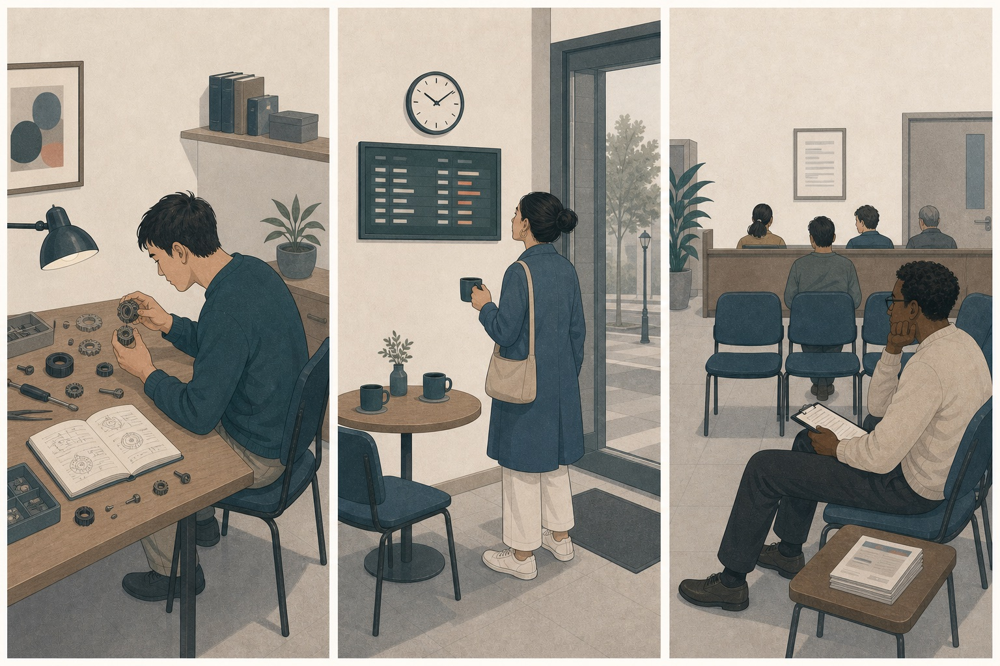
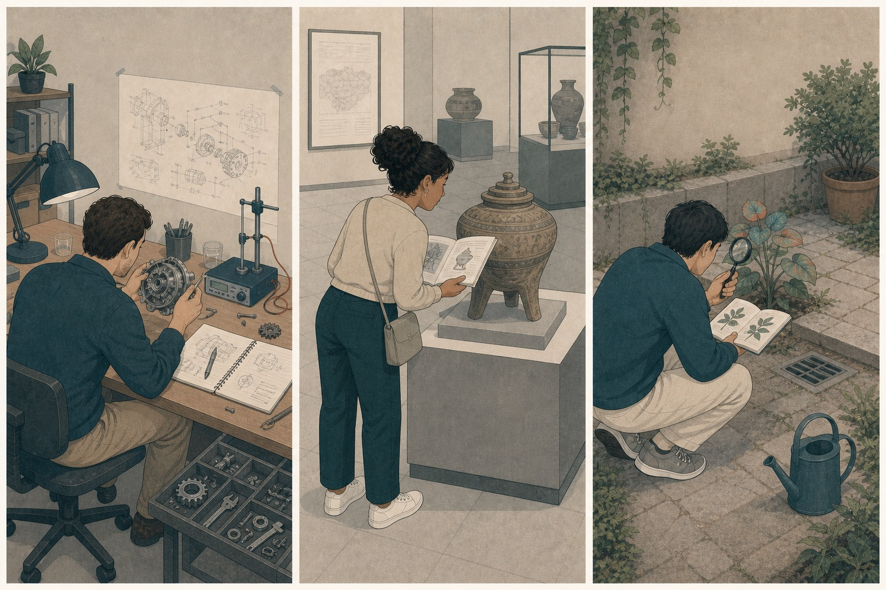
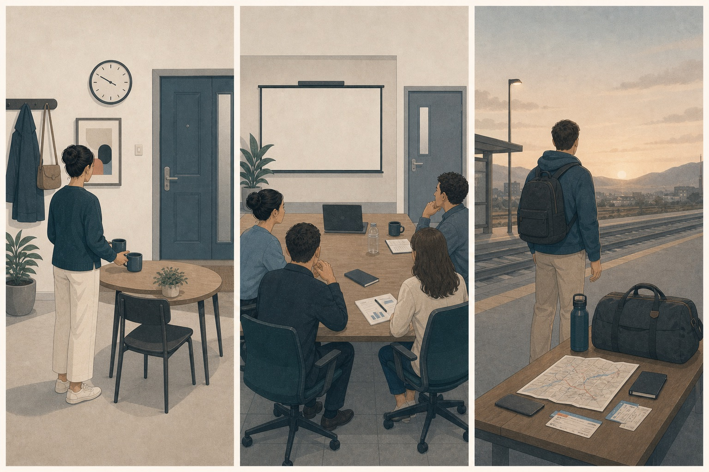
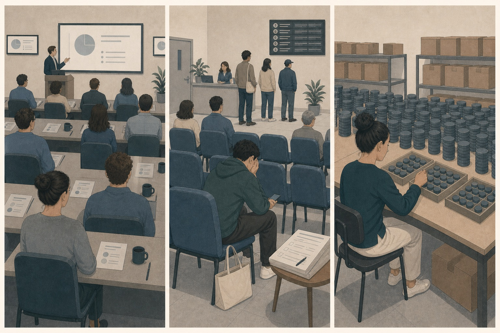

你打开一段陌生代码，本来只想修一个错误，却逐渐想弄清为什么整个机制会这样运行。
先判断，再展开
兴趣更突出。对象在当下，既陌生又似乎可以理解；行动不是赶快得到结果，而是继续观察和提问。
OPTIONAL READING · ATTENTION AND TIME
兴趣让人靠近尚未理解的东西，期待把注意力投向尚未发生的结果，无聊则说明眼前活动既缺少意义，也无法有效占用注意力。三者都在描述“我接下来愿不愿意继续”。
READ FIRST · NAME SECOND
先不要找标准答案。注意自己最想靠近什么、等待什么，或者逃离什么。
兴趣更突出。对象在当下，既陌生又似乎可以理解；行动不是赶快得到结果，而是继续观察和提问。
期待更突出，也可能混有焦虑。注意力指向尚未发生但对你重要的未来结果。
无聊更突出。问题不只是安静或低刺激，而是活动既缺少意义，也无法让注意力有效投入。
EVENT FIRST
三种体验不靠人物表情区分，而靠对象、时间位置和活动结构。

ONE-MINUTE COMPARISON
这里有我还不知道、但可能弄懂的东西。
靠近 · 探索 · 提问重要的事情还没发生，我在提前模拟它。
准备 · 等待 · 想象眼前活动既不重要，也无法让注意力稳定投入。
离开 · 换任务 · 寻找刺激或意义THREE ATTENTION STATES
同样是“心不在眼前”，可能是在深入当下、预演未来，或根本找不到值得留下的对象。
INTEREST · 陌生但可理解
当一个事物具有新奇、复杂或不确定之处，同时你又觉得自己有机会逐步理解它，注意力会自然靠近并持续停留，这种趋向探索的体验就是兴趣。
眼前还有什么我没看懂，它的规律可能是什么。
这是怎么发生的？如果换一个条件会怎样？我想再看一会儿。
靠近、观察、提问、尝试和建立解释，让未知逐渐变得可理解。
这里有什么既陌生、又可能被我逐步理解的东西？
令人困惑、怪异甚至略微不安的东西也可能引发兴趣。完全熟悉会失去新奇，完全不可理解则容易变成困惑或放弃；兴趣常出现在两者之间。

ANTICIPATION · 未来结果正在靠近
当一个尚未发生的结果对你有价值，而且你认为它具有一定发生可能，注意力会提前伸向未来，模拟结果并准备行动。期待可以愉快，也可以和焦虑同时存在。
未来将发生什么，它离现在还有多远，我需要提前准备什么。
等它真正到来会怎样？也许快了。我可以先把需要的东西准备好。
等待、想象、规划、确认时间和提前准备，让自己能够接住未来结果。
我正在等待哪个尚未发生、但对我重要的结果？
期待描述注意力朝向未来，并不保证结果一定好。面向希望得到的结果时更接近积极期待；同时想到失败可能时，焦虑可以加入。

BOREDOM · 注意力与活动失配
当你想把注意力投入某项活动，却发现它太重复、太容易、太困难，或者与自己的目标没有联系，注意力会不断脱落，并产生“想离开这里、换点什么”的无聊。
眼前活动为什么留不住我，它是缺少挑战，还是缺少意义。
这什么时候结束？做这些有什么用？能不能换一件真正需要我参与的事。
寻找刺激、切换任务、提高或降低难度，或者重新解释活动与目标的关系。
是难度留不住注意力，还是这件事对我没有意义？
无聊是活动结构与注意需要之间的信号。它可能提示需要换方法、加挑战、恢复意义，也可能只是疲劳让任何活动都难以投入；原因不同，处理方式也不同。

THREE APPRAISALS
情绪词只是结果，真正有用的是看懂它背后的判断。
NEAREST NEIGHBORS
陌生、复杂甚至略微令人不安的东西也可能引发兴趣；关键是它值得继续理解。
期待突出希望得到的结果；焦虑突出不确定威胁。重要事件常让两者同时出现。
平静可以舒适而不需要改变；无聊通常带着“这里留不住我”的不适和离开冲动。
如果增加一点新奇和可理解性就愿意回来，可能缺的是兴趣；如果怎么调整都觉得这件事不值得，缺的更可能是意义。
MIXED EMOTIONS
你拿到一个陌生领域的项目资料：里面有许多想弄懂的新机制，下周才会确认是否正式启动，但今天的准备会议仍在重复已经知道的信息。
新机制既陌生又似乎可以理解，让你愿意继续研究。
项目是否启动仍在未来，而且结果会影响接下来的行动。
当前会议缺少新信息与参与空间，注意力不断脱离。
混合情绪不矛盾：它们分别评价项目内容、未来结果和眼前活动。
RETRIEVAL
不必答得唯一正确，重点是指出注意力的对象和时间位置。
一本书很难，但刚好解释了你最近反复遇到的问题，你开始在页边记下新的疑问。
新奇与复杂存在，同时你感到自己有能力逐步理解。
朋友答应晚上告诉你旅行是否成行，你已经查好路线，却还不能订票。
有价值的未来结果尚未确定，行动先进入准备状态。
培训内容远超目前基础，你连问题从哪里开始都看不出来，只想尽快结束。
过难同样会让注意力失配；如果主要感受是无法建立理解，更接近困惑，随后可能转为无聊和脱离。
体检结果明天公布，你一方面希望一切正常，一方面不断想到坏结果。
希望得到正常结果形成期待，不确定威胁形成焦虑。
你休息了一下午，环境很安静，也没有想换活动，只觉得身体逐渐松下来。
低唤醒并没有伴随“这里留不住我”的不适和脱离冲动。
游戏重复刷同一关已经没有变化，但朋友提出一种没试过的限制玩法，你重新想研究。
新的限制恢复了复杂度和可探索空间，注意力重新找到对象。
TRANSFER
不保存答案，只用三步判断注意力为什么正在变化。
注意力是在研究眼前未知，还是提前伸向未来结果？前者更接近兴趣，后者更接近期待。
兴趣需要探索，期待需要准备和容忍未确定，无聊则需要改变任务、难度或它与目标的连接。
不要只命令自己“专心”，先问注意力为什么没有地方可去。
WHAT TO EXPECT
不是让自己对所有事情都有兴趣，而是能区分继续投入、等待结果和改变活动这三种不同需要。
TAKEAWAYS
它们不是意志力评分。看清是哪一种，才知道应该继续探索、等待准备，还是改变任务。
RESEARCH BASIS
这些概念没有单一固定表情，页面按评价对象和行动倾向组织。
四项实验把兴趣与新奇—复杂性、可理解能力两类评价联系起来。
SEEKING 系统说明探索与期待如何为获取资源和行动提供动力。
无聊的意义与注意成分模型：活动需要既能吸引注意，也与目标相连。
系统综述区分对未来奖赏的动机性“想要”与获得之后的愉悦“喜欢”，帮助理解期待为何不等于满足。
兴趣、期待和无聊都可能受疲劳、环境、注意能力与任务意义影响。长期注意困难、持续快感缺失或明显影响生活时，不能只用一张情绪页面解释。